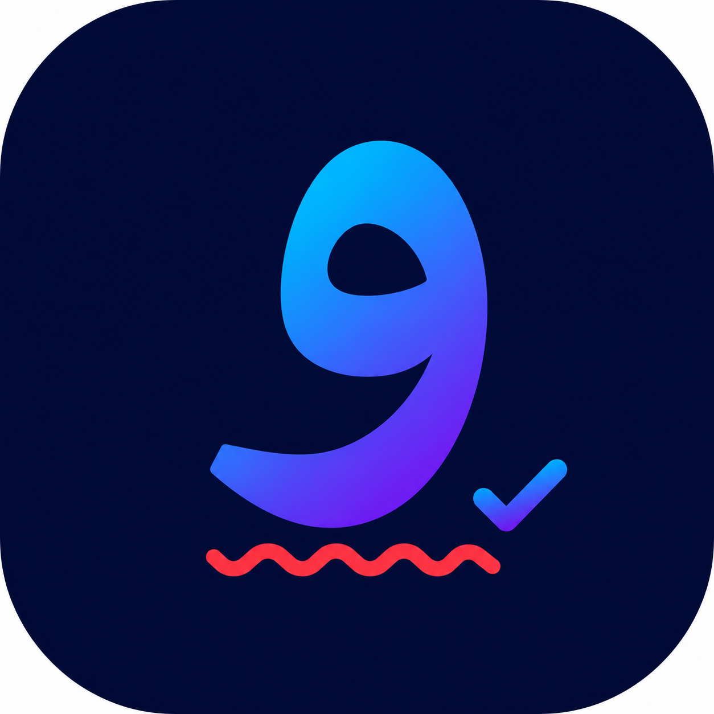

راستنویس
ویراستار هوشمند فارسی در توییتر/X
فعال بودن افزونه
نمایش پیشنهادهای ظریف (تنوین و تکرار)
تست و بررسی درستنویسی جمله
بررسی متن
اصلاح خودکار
کپی اصلاحشده
✕
واژهنامه شخصی (کلمات نادیدهگرفتهشده)
هنوز کلمهای نادیده گرفته نشده است.
۰
توییت دارای خطا که در تایملاین نشانهگذاری شده
پردازش ۱۰۰٪ محلی و امن ·
پاککردن لغات شخصی
·
صفر کردن آمار